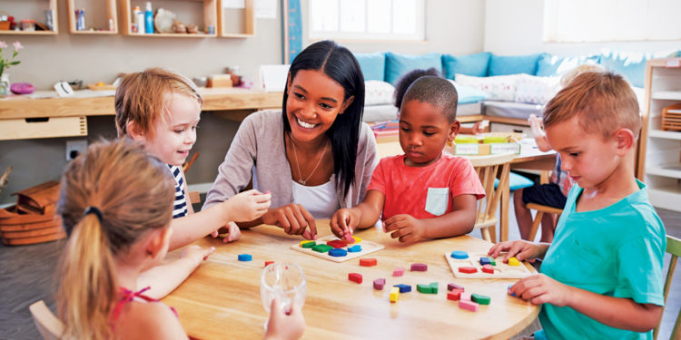

Our Program
Holistic Child Development
The School Readiness Program aims to create conducive learning environments at school and at home by creating empowered parents, equipped teachers and enriched classrooms to ensure holistic development of each child
Enriched Classrooms

We provide schools with comprehensive early childhood kit comprising fun, safe durable learning materials and age appropriate student workbooks.
Equipped Teachers
We have a year long teacher training and program support model to ensure developmentally appropriate practices in classroom.
Empowered Parents
We work with parents to build awareness on helping children better in their home environment through targeted workshops and home activity sheets